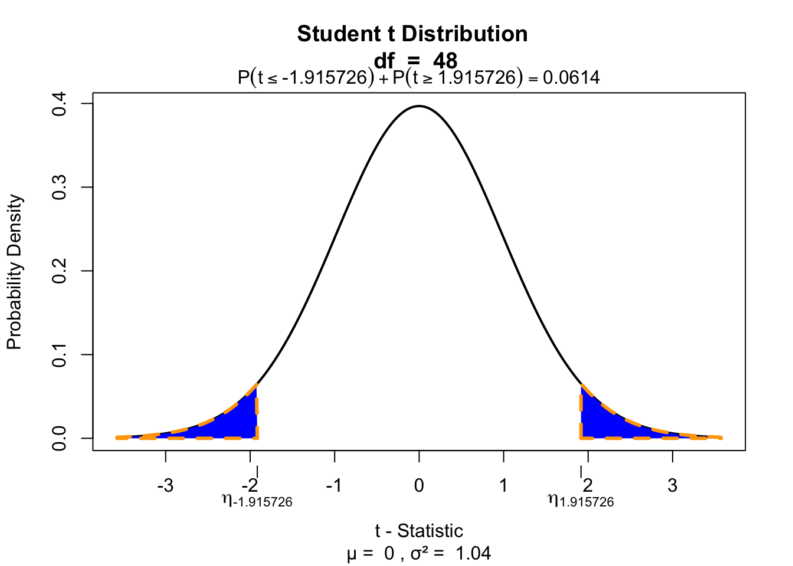
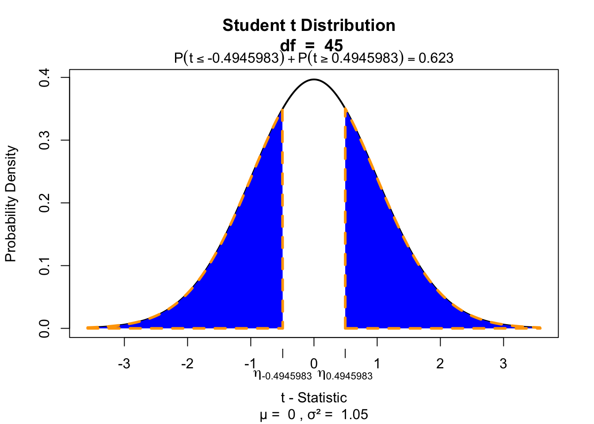

Paired and Independent
t-test
Paired-samples t-test
Paired 2 samples
Paired-samples t-test
In the Paired samples t-test the deviation (\(D\)) for each pair is calculated and the mean of these deviations (\(\bar{D}\)) is tested against the null hypothesis where \(\mu = 0\).
\[t_{n-1} = \frac{\bar{D} - \mu}{ {SE}_D }\]
Where \(n\) (the number of cases) minus \(1\), are the degrees of freedom \(df = n - 1\) and \(SE_D\) is the standard error of \(D\), defined as \(s_D/\sqrt{n}\).
Hypothesis
\[\LARGE{ \begin{aligned} H_0 &: \bar{D} = \mu_D \\ H_A &: \bar{D} \neq \mu_D \\ H_A &: \bar{D} > \mu_D \\ H_A &: \bar{D} < \mu_D \\ \end{aligned}}\]
Data structure
| index | k1 | k2 |
|---|---|---|
| 1 | d | d |
| 2 | d | d |
| 3 | d | d |
| 4 | d | d |
Where \(k\) is the level of the categorical predictor variabla and \(d\) is the value of the outcome/dependent variable.
Data example
We are going to use the IQ estimates we collected last week. You had to gues the IQ of the one sitting next to you and your own IQ.
Let’s take a look at the data.
IQ estimates
Calculate \(D\)
D = IQ.next.to.you - IQ.youCalculate \(\bar{D}\)
D = na.omit(D) # get rid of all missing values
D.mean = mean(D)
D.mean[1] 1.959184And we also need n.
n = length(D)
n[1] 49Calculate t-value
\[t_{n-1} = \frac{\bar{D} - \mu}{ {SE}_D }\]
mu = 0 # Define mu
D.sd = sd(D) # Calculate standard deviation
D.se = D.sd / sqrt(n) # Calculate standard error
df = n - 1 # Calculate degrees of freedom
# Calculate t
t = ( D.mean - mu ) / D.se
t[1] 1.915726Test for significance
Two tailed
if(!"visualize" %in% installed.packages()) { install.packages("visualize") }
library("visualize")
visualize.t(c(-t,t), df, section="tails")
Effect-size
\[r = \sqrt{\frac{t^2}{t^2 + \text{df}}}\]
r = sqrt(t^2/(t^2 + df))
r[1] 0.2665104Confidence interval
To display correct conficance intervals in SPSS we need to correct the original scores for whithin subject variation.
** SPSS SYNTAX
COMPUTE personal_mean = MEAN(IQ.next.to.you, IQ.you).
EXECUTE.
AGGREGATE
/OUTFILE=* MODE=ADDVARIABLES
/BREAK=
/total_mean = MEAN(personal_mean).
COMPUTE adjustment = total_mean - personal_mean.
EXECUTE.
COMPUTE IQ.next.to.you.adj = IQ.next.to.you + adjustment.
COMPUTE IQ.you = IQ.you + adjustment.
EXECUTE.
Independent-samples t-test
Compare 2 independent samples
Independent-samples t-test
In the independent-samples t-test the mean of both independent samples is calculated and the difference of these \((\bar{X}_1 - \bar{X}_2)\) means is tested against the null hypothesis where \(\mu = 0\).
\[t_{n_1 + n_2 -2} = \frac{(\bar{X}_1 - \bar{X}_2) - \mu}{{SE}_p}\]
Where \(n_1\) and \(n_2\) are the number of cases in each group and \(SE_p\) is the pooled standard error.
Hypothesis
\[\begin{aligned} H_0 &: t = 0 = \mu_t \\ H_A &: t \neq 0 \\ H_A &: t > 0 \\ H_A &: t < 0 \\ \end{aligned}\]Data structure
| index | k | outcome |
|---|---|---|
| 1 | 1 | d |
| 2 | 1 | d |
| 3 | 2 | d |
| 4 | 2 | d |
Where \(k\) is the level of the categorical predictor variabla and \(d\) is the value of the outcome/dependent variable.
Additional assumption
Specificly for independent sample \(t\)-test.
- Equality of variance
- \(H_0\) : Variance \(=\) equal (\(p\) > .05)
- \(H_A\) : Variance \(\neq\) equal (\(p\) < .05)
Example
We are going to use the IQ estimates we collected last week again. You had to gues the IQ of the one sitting next to you and your own IQ. But we are going to add gender to the data set. We did not register this so we are going to simulate some genders.
gender = sample(c("male", "female"), dim(data)[1], replace = TRUE)The data
Calculate means
IQ.you.male = subset(data, gender == "male", select = IQ.you)$IQ.you
IQ.you.female = subset(data, gender == "female", select = IQ.you)$IQ.you
IQ.you.male.mean = mean(IQ.you.male, na.rm = T)
IQ.you.female.mean = mean(IQ.you.female, na.rm = T)
rbind(IQ.you.male.mean, IQ.you.female.mean) [,1]
IQ.you.male.mean 120.8846
IQ.you.female.mean 119.7826Calculate variance
IQ.you.male.var = var(IQ.you.male, na.rm = T)
IQ.you.female.var = var(IQ.you.female, na.rm = T)
rbind(IQ.you.male.var, IQ.you.female.var) [,1]
IQ.you.male.var 70.90615
IQ.you.female.var 43.45059IQ.you.male.n = length(IQ.you.male) - 1
IQ.you.female.n = length(IQ.you.female) - 1
rbind(IQ.you.male.n, IQ.you.female.n) [,1]
IQ.you.male.n 25
IQ.you.female.n 22Calculate t-value
\[t_{n_1 + n_2 -2} = \frac{(\bar{X}_1 - \bar{X}_2) - \mu}{{SE}_p}\]
Where \({SE}_p\) is the pooled standard error.
\[{SE}_p = \sqrt{\frac{S^2_p}{n_1}+\frac{S^2_p}{n_2}}\]
And \(S^2_p\) is the pooled variance.
\[S^2_p = \frac{(n_1-1)s^2_1+(n_2-1)s^2_2}{n_1+n_2-2}\]
Where \(s^2\) is the variance and \(n\) the sample size.
Calculate pooled variance
\[S^2_p = \frac{(n_1-1)s^2_1+(n_2-1)s^2_2}{n_1+n_2-2}\]
df = IQ.you.male.n + IQ.you.female.n - 2
s2.p = ( (IQ.you.male.n-1)*IQ.you.male.var + (IQ.you.female.n-1)*IQ.you.female.var ) / df
df[1] 45s2.p[1] 58.09356Calculate pooled SE
\[ {SE}_p = \sqrt{\frac{S^2_p}{n_1}+\frac{S^2_p}{n_2}} \]
se.p = sqrt( ((s2.p/IQ.you.male.n) + (s2.p/IQ.you.female.n)) )
se.p[1] 2.228084Calculate t-value
\[t_{n_1 + n_2 -2} = \frac{(\bar{X}_1 - \bar{X}_2) - \mu}{{SE}_p}\]
t = ( IQ.you.male.mean - IQ.you.female.mean ) / se.p
t[1] 0.4945983Test for significance
Two tailed
if(!"visualize" %in% installed.packages()) { install.packages("visualize") }
library("visualize")
visualize.t(c(-t,t), df, section="tails")
Effect-size
\[r = \sqrt{\frac{t^2}{t^2 + \text{df}}}\]
r = sqrt(t^2/(t^2 + df))
r[1] 0.07353078End
Contact